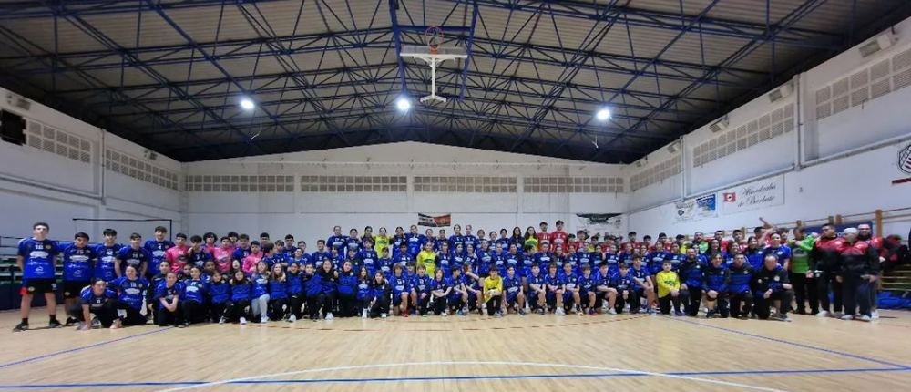
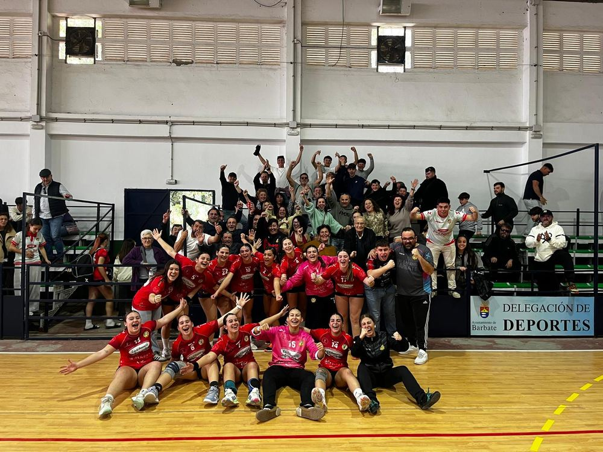

Desde 1997
El Club
Casi tres décadas de balonmano en Barbate, entre el pabellón y la playa.
Historia
Nuestra trayectoria
El Club Balonmano Barbate echa a andar en 1997, cuando un grupo de aficionados decidió que a este pueblo de pescadores le hacía falta también un equipo de balonmano. Se entrenaba con lo que había: una pista compartida, porterías prestadas y muchas ganas. Poco a poco, aquel proyecto modesto fue creciendo hasta convertirse en una escuela con equipos en casi todas las categorías, formando a generaciones de jugadoras y jugadores que hoy siguen ligados al club, muchos de ellos ya como entrenadores.
Con los años, y aprovechando que Barbate es playa además de pueblo, el club dio un paso natural: sumar el balonmano playa a su actividad, llevando el nombre de Barbate a torneos de arena por toda la Costa de la Luz. Hoy el Club Balonmano Barbate compite cada temporada con más de diez equipos entre pista y playa, pero mantiene intacta la idea de siempre: un club de cantera, de pueblo, donde cualquier niño o niña de Barbate tiene un sitio en la pista.

Qué nos define
Valores del club
Formación
Desde la escuela hasta el sénior, formamos jugadores y jugadoras en todas las categorías.
Pista y playa
Únicos en combinar la competición de pabellón con el balonmano playa en la arena de Barbate.
Pueblo y afición
Un club de Barbate para Barbate, con la afición como parte del equipo cada jornada.
Instalaciones
El pabellón
Pabellón Municipal, Av. Joaquín Blume, 14, 11160 Barbate, Cádiz. Aquí entrenan y compiten nuestros equipos de balonmano pista.
Cómo llegar